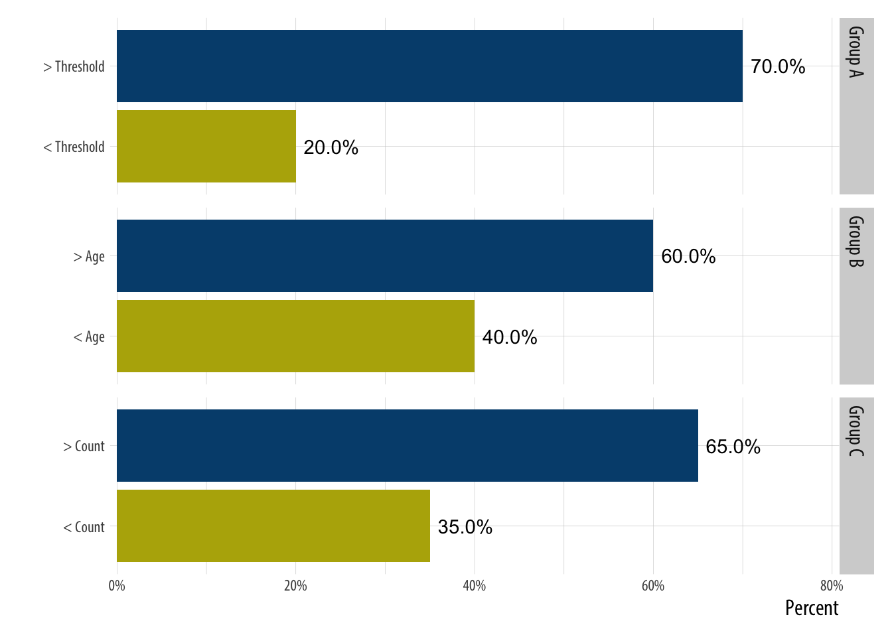

Testing links nytimes
library(tidyverse)## ── Attaching packages ─────────────────────────────────────── tidyverse 1.3.0 ──## ✓ ggplot2 3.3.2 ✓ purrr 0.3.4
## ✓ tibble 3.0.4 ✓ dplyr 1.0.2
## ✓ tidyr 1.1.2 ✓ stringr 1.4.0
## ✓ readr 1.4.0 ✓ forcats 0.5.0## ── Conflicts ────────────────────────────────────────── tidyverse_conflicts() ──
## x dplyr::filter() masks stats::filter()
## x dplyr::lag() masks stats::lag()tibble(group = c('Group A', 'Group A',
'Group B', 'Group B',
'Group C', 'Group C'),
fctr = c('< Threshold', '> Threshold',
'< Age', '> Age',
'< Count', '> Count'),
value = c(.2, .7, .4, .6, .35, .65)) %>%
mutate(order = c(1,2,1,2,1,2)) %>%
ggplot(aes(x = fctr, y = value, label = scales::percent(value), fill = factor(order))) +
geom_bar(stat = "identity") +
facet_grid(group ~ ., scales = "free_y") +
coord_flip(ylim = c(0, .8)) +
hrbrthemes::scale_y_percent() +
scale_fill_manual(values = c("#b6af06", "#004d7c")) +
geom_text(nudge_y = .04) +
theme_twg() +
theme(legend.position = 'none',
strip.background =element_rect(fill="lightgray", color = NA)) +
labs(x = "", y = 'Percent')